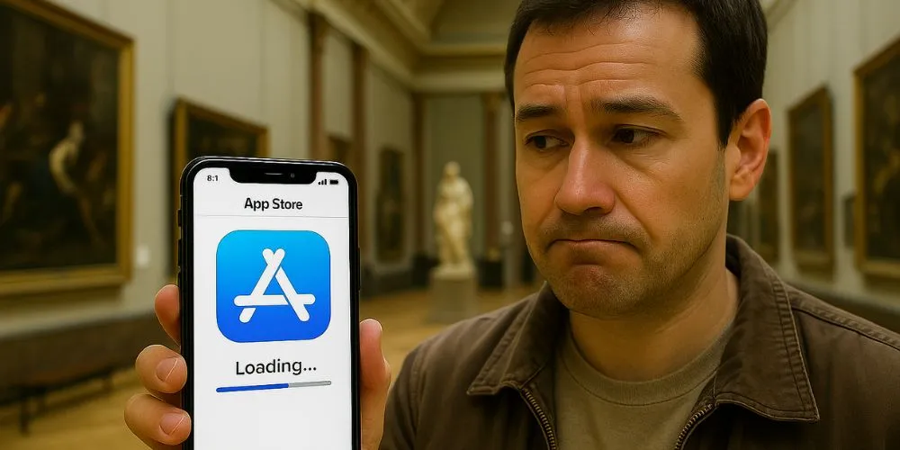

Dr. Rosa Sala
QR-Code-Audioguides und Smartphone-Lautsprecher: Stören Besucher ohne Kopfhörer andere?

Die kurze Antwort
- Ein Audioguide per QR-Code (eine Web-App, die im Smartphone-Browser läuft) gibt den Ton standardmäßig über den Lautsprecher des Handys wieder. Ein Browser kann den Ton nicht zuverlässig an die für Telefonate vorgesehene Hörmuschel umleiten.
- Eine native App (aus dem App Store oder von Google Play) bietet hier mehr Kontrolle: Sie kann die Hörmuschel ansteuern oder die Wiedergabe blockieren, bis Kopfhörer eingesteckt sind. Der Haken dabei ist jedoch, dass Besucher die App erst herunterladen müssen – und genau das ist eine Hürde, die sich die allermeisten von ihnen schlichtweg nicht antun wollen.
- In den allermeisten Museen und Kulturstätten reichen einfache Maßnahmen völlig aus: Die Besucher nutzen ihre eigenen Kopfhörer oder regeln die Lautstärke herunter und halten das Smartphone – mit der Unterkante zum Ohr – seitlich an den Kopf.
- Für Orte und Fahrzeuge, die strengere Anforderungen stellen, gibt es eine elegante Lösung: Ein kurzer Hörtest direkt im Browser – basierend auf dem sogenannten „Huggins-Pitch“-Effekt – überprüft, ob der Gast Kopfhörer trägt. Wer diesen Test nicht besteht, bekommt die Inhalte stattdessen bequem als Text und Bilder ausgespielt.
Die Sorge ist berechtigt: Handygeräusche stören die meisten Menschen
Wenn wir einem Museum oder einem Schiffsbetreiber einen Audioguide per QR-Code vorstellen, kommt immer wieder derselbe Einwand: „Die Leute werden den Ton laut abspielen und damit alle anderen stören.“
Diese Befürchtung ist absolut nachvollziehbar. In einer Umfrage von Transport for London unter 1.000 Fahrgästen im Juni 2025 gaben 70 % an, dass laute Musik und Telefonate ohne Kopfhörer für sie ein Ärgernis darstellen [1]. In einer im April 2025 veröffentlichten YouGov-Umfrage sagten zudem 79 % der Briten, dass sie sich gestört fühlen, wenn andere Personen Musik oder Videos laut auf ihrem Smartphone wiedergeben; 41 % gaben sogar an, dass sie das sehr stark stört [2].
Ein ruhiger Museumssaal oder ein Ausflugsboot, auf dem Passagiere eine Stunde lang eng beieinandersitzen, sind exakt die Umgebungen, in denen dieses Thema ins Gewicht fällt. Einige Einrichtungen lehnen webbasierte Audioguides aus diesem Grund ab und greifen stattdessen zu nativen Apps oder Leihgeräten. Wie wir im Folgenden sehen werden, erkauft man sich diese Kontrolle jedoch zu einem hohen Preis.
Warum ein Audioguide per QR-Code über den Smartphone-Lautsprecher abgespielt wird
Die meisten Smartphones verfügen über zwei Lautsprecher:

- Die Hörmuschel sitzt am oberen Rand des Bildschirms. Sie ist für Telefonate ausgelegt, bei denen man das Gerät ans Ohr hält, und gibt den Ton entsprechend leise und diskret wieder.
- Der Hauptlautsprecher befindet sich in der Regel an der Unterkante des Smartphones. Über ihn laufen Musik, Videos und Freisprechanrufe.
Bei vielen neueren Smartphones fungiert die Hörmuschel zwar auch als zweiter Stereolautsprecher für Musik und Videos – in diesem Modus gibt sie den Ton allerdings in voller Lautsprecherlautstärke aus, nicht mit der gedämpften Lautstärke eines Telefonats.
Eine native App kann das Betriebssystem anweisen, den Ton im Telefonmodus gezielt über die Hörmuschel auszugeben. Messenger-Apps nutzen genau das, wenn Sie das Smartphone ans Ohr halten, um eine Sprachnachricht abzuhören. Eine Webseite kann dies hingegen nicht zuverlässig steuern:
- Unter Android unterstützen weder Chrome noch Firefox die Browserfunktion zur Auswahl eines bestimmten Audioausgangs (
setSinkId) [3]. - Auf dem iPhone kann Safari den Ton zwar als Nebeneffekt einer Mikrofonnutzung auf die Hörmuschel umleiten. Fehlerberichte aus verschiedenen iOS-Versionen über mehrere Jahre hinweg zeigen jedoch, dass dieses Verhalten unzuverlässig ist [4]. Zudem müsste eine Webseite jeden Besucher erst um Zugriff auf das Mikrofon bitten – bloß um eine Audioaufnahme abzuspielen.
Deshalb gibt ein browserbasierter Audioguide den Ton grundsätzlich über den Lautsprecher aus, sofern der Besucher keine Kopfhörer anschließt. Das liegt an den technischen Rahmenbedingungen mobiler Browser und ist keine bewusste Designentscheidung eines einzelnen Anbieters.
Was eine native App leisten kann – und was sie kostet
Eine native App hat deutlich mehr Kontrolle über die Audioausgabe als eine Webseite. Sie kann den Ton wie bei einem Telefonat gezielt über die Hörmuschel wiedergeben und die Wiedergabe so lange blockieren, bis Kopfhörer angeschlossen sind. Damit lässt sich das Geräuschproblem rein technisch gesehen lösen.
Der Preis dafür ist jedoch eine drastisch geringere Reichweite. Besucher müssen die App im Store erst finden, herunterladen und installieren, bevor sie auch nur ein Wort hören. Unsere Analyse von 175 offiziellen Audioguide-Apps für Museen zeigt, dass im Schnitt nur 2,47 % der Besucher eine solche App tatsächlich herunterladen. Bei einer einstündigen Bootsfahrt, bei der die Gäste unterwegs oft auf mobile Daten angewiesen sind und die Zeit bis zur Abfahrt knapp ist, liegt diese Hürde noch höher.
Die eigentliche Wahl besteht also nicht zwischen einer lauten Web-App und einer leisen nativen App. Vielmehr geht es um die Entscheidung zwischen einem Audioguide, den praktisch jeder Besucher sofort öffnen kann, und einem, den am Ende kaum jemand nutzt. Die entscheidende Frage lautet daher: Kann eine Web-App eine vergleichbare Kontrolle über die Kopfhörernutzung bieten? Ja, das geht – wie wir im Folgenden zeigen.
Warum auch das Verteilen von Kopfhörern keine gute Lösung ist
Einweg-Ohrhörer. Früher haben wir selbst Einweg-Ohrhörer angeboten, inzwischen haben wir damit aufgehört. Kopfhörer fallen unter die Kategorie Elektrokleingeräte – und genau diese Art von Elektroschrott wird am seltensten recycelt. Laut dem „Global E-waste Monitor 2024“ der Vereinten Nationen fielen im Jahr 2022 weltweit 62 Millionen Tonnen Elektroschrott an. Davon wurden nur 22,3 % nachweislich ordnungsgemäß gesammelt und recycelt; bei Kleingeräten lag die dokumentierte Quote sogar nur bei 12 % [5].
Hinzu kommt die Außenwirkung, die Museen und Kulturstätten nicht unterschätzen sollten. In Zeiten eines wachsenden Bewusstseins für Nachhaltigkeit achten Gäste zunehmend auf den ökologischen Fußabdruck der Einrichtungen, die sie besuchen. Ein Korb voller Plastik-Ohrhörer am Eingang, von denen jedes Paar nach einer Stunde im Müll landet, sendet eine denkbar ungünstige Botschaft. Das steht im sichtbaren Widerspruch zu einem zeitgemäßen Besuchererlebnis und vermittelt eine Wegwerfmentalität, die viele kritisch sehen – und im Zweifel auch in ihren Online-Bewertungen festhalten.
Unterschiedliche Anschlüsse. Kabelgebundene Kopfhörer müssen zum Smartphone des jeweiligen Besuchers passen. Je nach Modell kommen dafür ein 3,5-mm-Klinkenstecker, Lightning bei älteren iPhones oder USB-C infrage. Zwar müssen neu auf den Markt gebrachte Smartphones in der EU seit dem 28. Dezember 2024 über einen USB-C-Anschluss verfügen [6], doch die Geräte, die Besucher bereits in der Tasche tragen, werden noch auf Jahre hinaus gemischt bleiben. Eine Einrichtung müsste daher dauerhaft drei verschiedene Kopfhörertypen vorrätig halten.
Verleih von Bluetooth-Kopfhörern. Hier müsste jeder Besucher die Kopfhörer zunächst selbst mit seinem Smartphone koppeln – wobei das Personal erfahrungsgemäß oft aushelfen muss. Am Ende des Besuchs muss das Gerät wieder entkoppelt („Dieses Gerät ignorieren“) werden, bevor das Team die Kopfhörer reinigen und aufladen kann. Damit holt man sich genau den Logistik- und Hygieneaufwand zurück, den ein Audioguide auf dem eigenen Smartphone eigentlich überflüssig machen soll.
Was wir den meisten Museen empfehlen
In den meisten Museen reichen ein paar einfache Maßnahmen völlig aus.
- Bitten Sie Besucher, ihre eigenen Kopfhörer mitzubringen. Weisen Sie bereits bei der Buchung, auf dem Ticket und auf Ihrer Website darauf hin. Viele Gäste haben ohnehin Ohrhörer dabei.
- Zeigen Sie eine einfache Alternative. Wer keine Kopfhörer dabeihat, regelt die Lautstärke herunter und hält das Smartphone ans Ohr (siehe Abbildung). Da der Ton meist aus der Unterkante des Geräts kommt, wird genau diese Kante seitlich ans Ohr gehalten.
- Arbeiten Sie mit Hinweisschildern und Personal. Ein gut sichtbares Schild direkt neben dem QR-Code schafft klare Erwartungen. Saalaufsichten oder Mitarbeiter können Gäste, die nicht daran denken, freundlich darauf hinweisen – genauso wie bei jeder anderen Hausregel auch.

Zwei Dinge helfen dabei in der Praxis: Zum einen sind Audioguide-Tracks kurz und werden einzeln gestartet, laufen also nicht als Dauerbeschallung wie Musik. Zum anderen genügt unserer Erfahrung nach meist ein kurzer Hinweis am Eingang oder durch das Personal, damit sich die Gäste rücksichtsvoll verhalten. Viele unserer Kunden arbeiten erfolgreich nach diesem Prinzip, ganz ohne Kopfhörer auszugeben.
Eines funktioniert hingegen nicht: die Audiodateien von vornherein leiser abzumischen. Wir haben das gemeinsam mit einem Kunden getestet – mit ernüchterndem Ergebnis: Besucher mit lauten Geräten drehten einfach die Lautstärke hoch, während Gäste mit schwächeren Lautsprechern den Audioguide selbst auf maximaler Stufe kaum noch verstehen konnten. Der Grund liegt darin, dass sich Smartphones erheblich in ihrer maximalen Lautstärke unterscheiden – was den wenigsten bewusst ist. Im Jahr 2023 testete GSMArena die Lautsprecher von über 110 Smartphones: Zwischen dem lautesten und dem leisesten Modell lag ein Unterschied von rund 10 Lautstärkeeinheiten (LUFS) [9]. Eine Aufnahme, die auf einem sehr lauten Smartphone angenehm klingt, ist auf einem leiseren Modell schlicht unverständlich. Die Audiodatei selbst gibt also keine feste Lautstärke vor – die Kontrolle darüber liegt allein beim Besucher.
Die Optionen auf einen Blick
| Option | Vorteile | Nachteile |
|---|---|---|
| Eigene Kopfhörer der Besucher | Keine zusätzliche Hardware oder Logistik erforderlich | Nicht jeder Besucher hat welche dabei |
| Smartphone ans Ohr halten, Lautstärke reduzieren | Ohne jedes Zubehör sofort umsetzbar | Weniger komfortabel; setzt die Mitwirkung der Gäste voraus |
| Einweg-Ohrhörer | Direkt vor Ort verfügbar | Elektroschrott, laufende Kosten, drei verschiedene Steckertypen |
| Bluetooth-Leihkopfhörer | Wiederverwendbar | Koppeln, Reinigen und Aufladen; hoher Personalaufwand |
| Native Audioguide-App | Kann die Hörmuschel ansteuern oder Wiedergabe auf Kopfhörer beschränken | Nur ein Bruchteil der Besucher lädt die App herunter |
| QR-Code-Audioguide mit Kopfhörer-Check | Kein Download nötig; verifiziert Kopfhörernutzung; Textversion als Alternative | Ein kurzer zusätzlicher Hörtest zu Beginn |
Für strengere Anforderungen: ein Kopfhörer-Check auf Basis des Huggins-Pitch-Effekts
Manche Betreiber brauchen mehr als bloße Appelle an die Rücksichtnahme. Ein typisches Beispiel sind Ausflugsboote oder Reisebusse, in denen Fahrgäste einem lauten Sitznachbarn nicht einfach ausweichen können. Genau für solche Fälle hat Nubart einen Kopfhörertest entwickelt, der direkt im Browser läuft – ganz ohne App.
Die wissenschaftliche Grundlage: ein Ton, der nur über Kopfhörer existiert
Der Test nutzt den sogenannten Huggins-Pitch-Effekt, ein Hörphänomen, das erstmals 1958 von Cramer und Huggins beschrieben wurde [7]. Das Prinzip lässt sich gut mit einem 3D-Film vergleichen.
Im 3D-Kino erhält jedes Auge ein leicht versetztes Bild. Isoliert betrachtet enthält keines der beiden Bilder echte Tiefeninformationen. Erst wenn das Gehirn beide Perspektiven abgleicht, entsteht der räumliche Eindruck. Setzt man die Brille ab, sehen beide Augen beide Bilder zugleich – und der 3D-Effekt verschwindet.
Beim Huggins-Pitch-Effekt passiert genau dasselbe mit Schall:
- Zwei nahezu identische Signale. Beide Ohren erhalten dasselbe Rauschen – vergleichbar mit dem gleichmäßigen Rauschen eines Wasserfalls. Auf einem Kanal wird jedoch ein winziger Frequenzbereich dieses Rauschens leicht verändert. Diese Abweichung ist so minimal, dass sie isoliert nicht wahrnehmbar ist.
- Das Gehirn erledigt den Rest. Jedes Ohr für sich hört also nur ein gleichmäßiges Rauschen. Doch sobald das Gehirn die Signale beider Ohren vergleicht, erkennt es den feinen Unterschied und erzeugt daraus einen zarten Ton. Dieser Ton steckt weder im linken noch im rechten Audiosignal – er entsteht erst im Kopf des Zuhörers. Verschiebt man diesen veränderten Bereich schrittweise, wird aus dem einzelnen Ton eine kurze Melodie.
- Kopfhörer funktionieren wie die 3D-Brille. Sie leiten jedem Ohr ein getrenntes Klangsignal zu. Über einen Smartphone-Lautsprecher vermischen sich beide Kanäle dagegen bereits in der Luft, sodass beide Ohren dasselbe Gemisch empfangen. Dem Gehirn fehlt damit die Grundlage für den Vergleich – die Melodie wird extrem schwach oder verschwindet komplett.
Die Idee, diesen Effekt als Kopfhörertest einzusetzen, stammt von Forschern des University College London. Sie führten Online-Hörtests durch und mussten sichergehen, ob die Studienteilnehmer zu Hause tatsächlich Kopfhörer trugen. Also machten sie den Test: Eine Gruppe hörte über Kopfhörer, die andere über Lautsprecher. Etwa 80 % der Probanden mit Kopfhörern erkannten den versteckten Ton in jedem Durchgang. In der Lautsprechergruppe traf dies hingegen nur auf rund 20 % zu.
Wie lässt sich diese 20-Prozent-Quote erklären? Diese Teilnehmer saßen vor herkömmlichen Computer-Lautsprechern. Die Forscher vermuten, dass man Töne bei einem gewissen physischen Abstand zwischen linkem und rechtem Lautsprecher teilweise dennoch getrennt wahrnehmen kann [8]. Bei einem Smartphone hingegen ist das ausgeschlossen: Seine Lautsprecher sitzen so nah beieinander, dass sich die Audiosignale im Raum sofort vermischen. Auch in unseren eigenen Tests war die Melodie über einen Laptop-Lautsprecher phasenweise noch hörbar, über die integrierten Smartphone-Speaker dagegen absolut nicht.
Der Test entlarvt zudem einen gängigen Trick: das Hören mit nur einem einzigen Ohrhörer. Da das Gehirn in diesem Fall nur ein einzelnes Signal empfängt, fehlt ihm jegliche Vergleichsmöglichkeit – und die Melodie bleibt unhörbar.
So funktioniert der Check für den Besucher

Nach der Sprachauswahl wird der Besucher gebeten, Kopfhörer aufzusetzen. Zwei Optionen stehen zur Auswahl:
- „Ich habe keine Kopfhörer“: Der Gast gelangt direkt zur Textversion, ohne den Hörtest durchlaufen zu müssen. Zu jedem Track werden automatisch ein Bild und der passende Text angezeigt. Bei einem Nubart-MOTION-Audioguide mit automatischem GPS-Trigger poppt der Inhalt genau dann auf, wenn das Fahrzeug den jeweiligen Punkt erreicht. Es wird kein Ton abgespielt.
- „OK“: Der Besucher absolviert einen kurzen Hörtest und öffnet danach den Audioguide.
- Der Gast hört drei Töne hintereinander und tippt auf denjenigen, bei dem im Hintergrund des Rauschens eine zarte Melodie zu hören ist. Während ein Signal abgespielt wird, leuchtet die entsprechende Schaltfläche auf.
- Das Ganze wird dreimal wiederholt. Alle drei Antworten müssen korrekt sein.
- Bei einer falschen Antwort bekommt der Besucher einen zweiten Versuch, wobei die Sequenzen in neuer Reihenfolge abgespielt werden. Durch reines Raten kommt man hier nicht weit: Selbst mit zwei Versuchen hätten bloß etwa 7 von 100 Personen rein statistisch das Glück, zufällig zu bestehen.
- Wer den Test besteht, startet direkt in den Audioguide. Wer auch den zweiten Versuch nicht schafft, wechselt automatisch zur Textversion.
Niemand bleibt ohne Inhalte: Text und Bilder statt Ton
Dieser Punkt liegt uns besonders am Herzen: Besucher ohne Kopfhörer oder Gäste, die den Test nicht bestehen, werden nicht ausgeschlossen. Sie können exakt dieselbe Führung auf dem Bildschirm verfolgen. Bilder, Bildergalerien und der vollständige Text jedes Tracks erscheinen zum passenden Zeitpunkt. Auf einem Ausflugsboot oder im Reisebus blendet sich der jeweilige Text automatisch ein, sobald das Fahrzeug die entsprechende Sehenswürdigkeit erreicht.
Alle Gäste erhalten vollen Zugang zu den Inhalten – lediglich die Audioausgabe setzt Kopfhörer voraus.
Natürlich ist der Huggins-Pitch-Test nicht unfehlbar. Besucher mit einseitigem Hörverlust werden ihn nicht bestehen können. Dasselbe gilt für Personen, die nur einen einzigen Ohrhörer tragen oder deren Smartphone auf Mono-Wiedergabe gestellt ist. Auch eine sehr laute Umgebung kann den Test erschweren [8]. Für all diese Gäste steht nahtlos die Textversion bereit. Der Check ist kein medizinischer Hörtest und entscheidet niemals darüber, ob jemand der Tour folgen kann. Es handelt sich vielmehr um dieselbe barrierefreie Version, die auch gehörlose oder schwerhörige Besucher nutzen.
Zudem endet die Prüfung nicht mit dem Start der Führung: Wird die Verbindung zu den Kopfhörern unterwegs getrennt, erkennt der Audioguide dies sofort und pausiert die Wiedergabe – sowohl bei kabelgebundenen als auch bei Bluetooth-Kopfhörern.
So bietet ein webbasierter Audioguide heute eine Kontrolle über die Kopfhörernutzung, für die früher zwingend eine native App nötig war – ganz ohne Download.
Fazit: Einfach anfangen und den Check nur dort ergänzen, wo er wirklich nötig ist
Unser Rat: Vertrauen Sie zunächst Ihren Besuchern und starten Sie ohne den Check. Bitten Sie Ihre Gäste vorab, eigene Kopfhörer mitzubringen, und zeigen Sie allen anderen, wie sie den Audioguide diskret nutzen können: mit reduzierter Lautstärke und dem Smartphone seitlich am Ohr. In den meisten Einrichtungen reicht das bereits völlig aus.
Sollten dennoch Beschwerden oder schlechte Bewertungen wegen störender Handygeräusche aufkommen, muss nichts neu aufgebaut werden: Den Kopfhörer-Check in einem bestehenden Nubart-Audioguide freizuschalten, kostet uns nur wenige Klicks. Ihre QR-Codes, Ihre Inhalte und die gewohnten Abläufe für Ihre Gäste bleiben davon völlig unberührt.
Quellen
- Transport for London, Pressemitteilung, 26. August 2025: New TfL campaign encourages customers to use headphones on public transport.
- YouGov, 28. April 2025: Littering, loudspeakers and Lime bikes: what public nuisances bother Britons most?
- Can I use: Browser-Unterstützung für
HTMLMediaElement.setSinkId, geprüft im November 2026. - WebKit Bugzilla, Bug 218012, eröffnet 2020, zuletzt geändert im Mai 2026.
- ITU und UNITAR, Global E-waste Monitor 2024, Pressemitteilung vom 20. März 2024.
- Europäische Kommission, 28. Dezember 2024: EU-Vorschriften für einheitliche Ladegeräte (EU common charger rules).
- Cramer, E. M., und Huggins, W. H. (1958). Creation of pitch through binaural interaction. Journal of the Acoustical Society of America, 30(5), 412–417.
- Milne, A. E., Bianco, R., Poole, K. C., et al. (2021). An online headphone screening test based on dichotic pitch. Behavior Research Methods, 53, 1551–1562.
- GSMArena, 30. Dezember 2023: Here are the loudest phones we tested in 2023.
Möchten Sie den Huggins-Pitch-Test selbst ausprobieren? Schreiben Sie uns, und wir senden Ihnen eine Demo.
Das könnte Sie auch interessieren

Die Akzeptanz von Audioguide-Apps in Museen
Eine eingehende Analyse realer Daten zeigt, dass weniger als 3 % der Museumsbesucher Audioguide-Apps nutzen, was ernsthafte Fragen hinsichtlich ihrer Wirksamkeit aufwirft.

Die Audioguides von Nubart sind barrierefrei
Barrierefreiheit gewinnt in Museen zunehmend an Bedeutung. Mit den Audioguides von Nubart können Sie alle Anforderungen erfüllen.